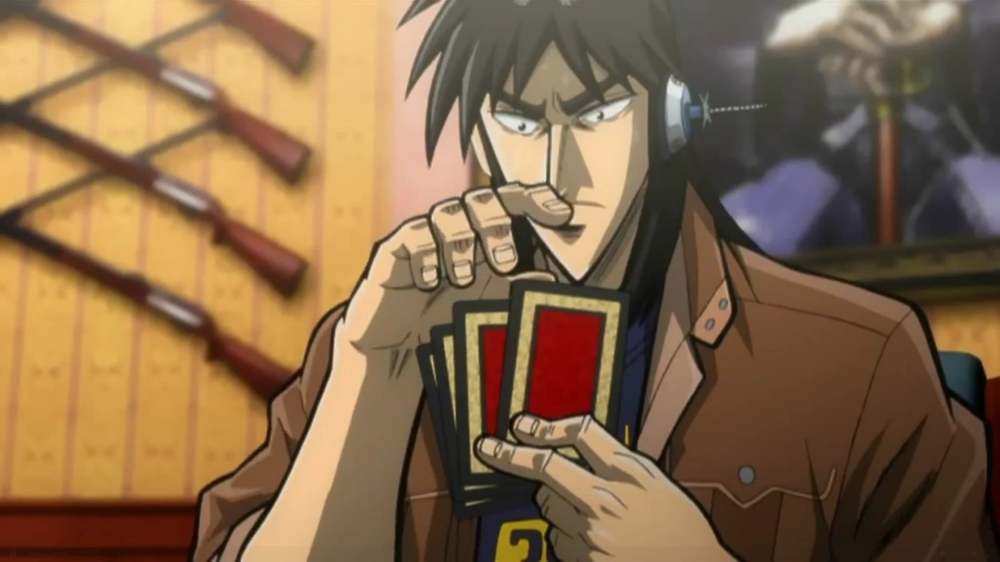

兵藤和尊
背景： 兵藤和尊是Teiai企业的常务理事，他在企业内部拥有极高的权力和影响力。他负责管理Teiai企业旗下的许多非法活动，包括高利贷业务和残酷的赌博游戏，这些游戏通常是为了那些无法偿还债务的人设计的，目的是让他们陷入更深的债务陷阱。
性格特点：
冷酷无情：兵藤和尊是一个冷酷无情的商人，他对债务人的痛苦和绝望毫不在意，只关心如何增加企业的利润。
精明狡猾：他在商业和政治上都极其精明，擅长利用他人的弱点来达到自己的目的。
权力欲强：兵藤和尊对权力有着极大的渴望，他在Teiai企业内部不断巩固自己的地位。
在故事中的表现：
兵藤和尊是许多残酷赌博游戏的幕后黑手，他设计了这些游戏来折磨和剥削债务人。
他在故事中多次与主角伊藤开司（Kaiji Itō）交锋，是开司在赌博之路上的主要对手之一。
兵藤和尊经常通过他的下属利根川浩輔（Tomonaga Kōsuke）来执行他的命令，确保赌博游戏的顺利进行。
与开司的关系： 兵藤和尊与伊藤开司的关系是典型的对手关系。开司因为欠下了Teiai企业的债务而被卷入了兵藤设计的各种赌博游戏。兵藤和尊不仅想要从开司身上获得金钱，还享受在心理上和身体上折磨开司的过程。开司在与兵藤和尊的斗争中逐渐成长，不断挑战兵藤的权威和游戏规则。 逆境无赖的兵藤和尊，是一部描绘主人公兵藤和尊在逆境中成长、拼搏、逆袭的励志小说。故事发生在充满竞争与挑战的现代社会，兵藤和尊作为一个普通青年，面临着重重困境。然而，在这些逆境中，他凭借着不屈的精神、坚定的信念和非凡的智慧，逐步成长为一位令人尊敬的强者。这部作品传递了勇敢面对逆境、积极向上的正能量，成为无数读者心中的励志典范。
兵藤和尊，一个平凡的大学生，家境一般，性格内向。在故事之初，他因为一场突如其来的家庭变故，陷入了生活的低谷。面对巨额债务、亲人离散的痛苦，兵藤和尊倍感压力。然而，在这逆境之中，他并未选择逃避，而是勇敢地承担起责任，决心改变自己的命运。
在逆境无赖的兵藤和尊中，兵藤和尊的成长历程分为三个阶段。第一阶段是觉醒阶段。在这个阶段，兵藤和尊在朋友和导师的帮助下，逐渐认识到自己的不足，开始学习各种技能，提升自己的综合素质。他刻苦锻炼，勤奋学习，为自己的逆袭之路奠定了基础。
第二阶段是拼搏阶段。在这个阶段，兵藤和尊进入了一家知名企业，开始了自己的职业生涯。在工作中，他充分发挥自己的聪明才智，为公司创造了巨大价值。与此同时，他结识了一群志同道合的朋友，共同面对职场中的挑战。在这个过程中，兵藤和尊不仅积累了丰富的经验，还锻炼了自己的意志。
第三阶段是逆袭阶段。在这个阶段，兵藤和尊凭借着自己的实力，成功地击败了竞争对手，成为公司的高层管理者。他带领团队，不断创新，为公司的发展做出了突出贡献。同时，他还积极参与社会公益事业，回馈社会，赢得了广泛的赞誉。
逆境无赖的兵藤和尊，不仅是一部个人奋斗史，更是一部反映社会现实的佳作。兵藤和尊在逆境中的拼搏，展现了当代青年面对困境时不屈不挠的精神风貌。以下是对兵藤和尊人物形象的几个亮点：
坚定信念：在面对逆境时，兵藤和尊始终坚信自己能够战胜困难，实现人生价值。这种信念成为他前进的动力，支撑着他一路走来。
自强不息：兵藤和尊深知自己的不足，因此他不断学习、进步，努力提升自己的能力。他的成长过程，是对“自强不息”这一精神的最好诠释。
热血友情：在兵藤和尊的成长过程中，他结识了一群志同道合的朋友。他们相互支持、共同进步，成为彼此最坚实的后盾。
担当责任：兵藤和尊在面对家庭困境时，毫不犹豫地承担起责任。他的担当精神，让人敬佩不已。
回馈社会：在取得成功后，兵藤和尊没有忘记初心，他积极参与社会公益事业，用实际行动回馈社会。
逆境无赖的兵藤和尊，以其紧张的情节、深刻的人物塑造和丰富的社会内涵，赢得了读者的喜爱。这部作品告诉我们，逆境并不可怕，可怕的是在逆境中失去勇气和信念。只要我们勇敢面对，积极拼搏，就一定能够战胜一切困难，实现自己的人生价值。

总之，逆境无赖的兵藤和尊是一部充满正能量的励志佳作。它让我们看到了一个普通青年在逆境中的成长与蜕变，激励着我们在面对困境时，勇敢地去拼搏、去奋斗。兵藤和尊的故事，将成为我们心中永恒的励志传奇。